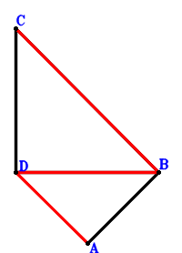
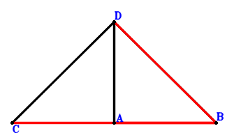

Exercise 38： Let CB⊥BA and CD⊥DB. Given that DA//CB, prove that \(DB^{2}=CB \cdot DA\).

\(\because \) CB⊥BA \(\therefore - \small\overrightarrow{BA} \cdot \small\overrightarrow{BC}=0\) . . . . . . \(①\)\(\because \) CD⊥DB \(\therefore \small\overrightarrow{BD} \cdot \small\overrightarrow{CD}=\small\overrightarrow{BD} \cdot \left(- \small\overrightarrow{BC} + \small\overrightarrow{BD}\right)=- \small\overrightarrow{BC} \cdot \small\overrightarrow{BD} + \small\overrightarrow{BD}^{2}=0\) . . . . . . \(②\)In conclusion, \(- \small\overrightarrow{CB} \cdot \small\overrightarrow{DA} + \small\overrightarrow{DB}^{2}=\small\overrightarrow{BC} \cdot \left(\small\overrightarrow{BA} - \small\overrightarrow{BD}\right) + \small\overrightarrow{BD}^{2}=\small\overrightarrow{BA} \cdot \small\overrightarrow{BC} - \small\overrightarrow{BC} \cdot \small\overrightarrow{BD} + \small\overrightarrow{BD}^{2}=-①+②=0\)\(\because\) DA//CB \(\therefore\) \(DB^{2}=CB \cdot DA\).
Exercise 40： Let DA⊥CB and CD⊥DB. Given that C, A, B are collinear, prove that \(DB^{2}=AB \cdot CB\).

\(\because \) CD⊥DB \(\therefore \small\overrightarrow{BD} \cdot \small\overrightarrow{CD}=\small\overrightarrow{BD} \cdot \left(- \small\overrightarrow{BC} + \small\overrightarrow{BD}\right)=- \small\overrightarrow{BC} \cdot \small\overrightarrow{BD} + \small\overrightarrow{BD}^{2}=0\) . . . . . . \(①\)\(\because \) DA⊥CB \(\therefore \small\overrightarrow{CB} \cdot \small\overrightarrow{DA}=- \small\overrightarrow{BC} \cdot \left(\small\overrightarrow{BA} - \small\overrightarrow{BD}\right)=- \small\overrightarrow{BA} \cdot \small\overrightarrow{BC} + \small\overrightarrow{BC} \cdot \small\overrightarrow{BD}=0\) . . . . . . \(②\)In conclusion, \(- \small\overrightarrow{BA} \cdot \small\overrightarrow{BC} + \small\overrightarrow{BD}^{2}=①+②=0\)\(\because\) C, A, B are collinear \(\therefore\) \(DB^{2}=AB \cdot CB\).